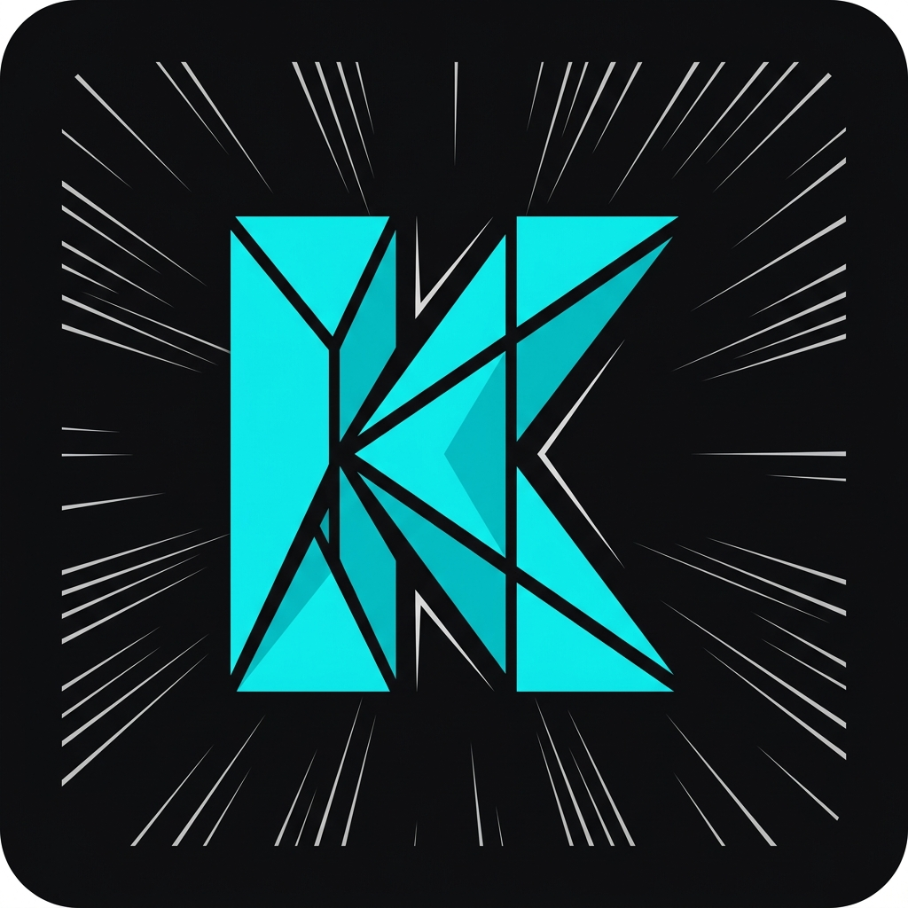

Extensión oficial para conectar Paperback iOS con tu servidor de descargas
Compatible con la última versión de Paperback disponible en iOS (incluyendo v0.8.11-r1). Soporta exploración de biblioteca, secciones de inicio dinámicas y visualización fluida de capítulos locales.
Soporte para el nuevo framework y SDK v6 de Paperback v0.9+. Actualmente compilado como stub inicial para compatibilidad futura.